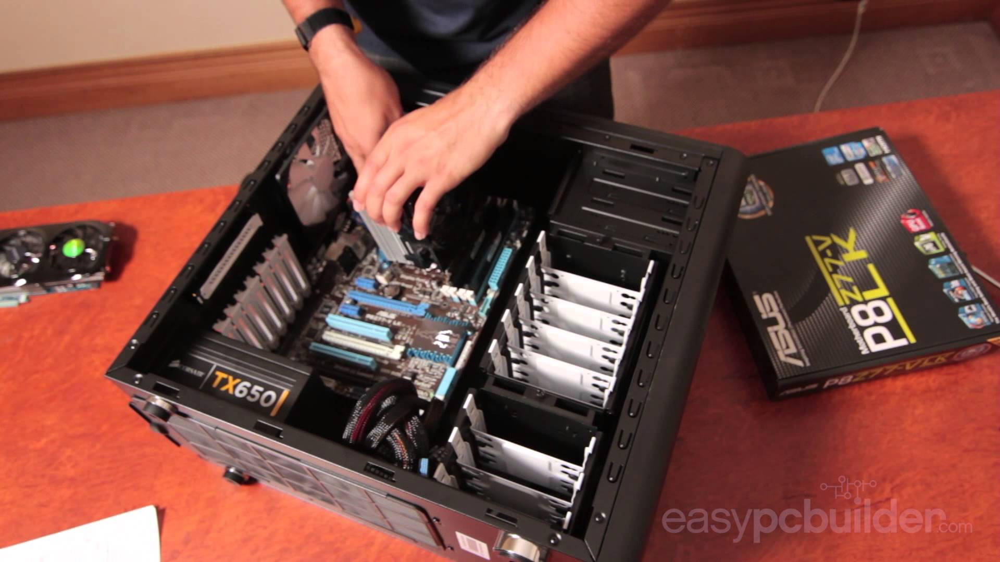

Let me Introduce My Self
Halo semuanya,Perkenalkan nama saya Andre Saputra Nurjaya biasa dipanggil Andre,atau kerap dipanggil juga drews oleh teman teman saya :D,Saat ini saya masih kuliah di STMIK Tasikmalaya jurusan Teknik Informatika.Aslinya saya tidak ada background maupun pengalaman sama sekali di bidang IT,maka dari itu saat ini saya sedang berusaha belajar sebisa mungkin mengenai dunia komputer.
My hobby
Ini adalah Hobby saya walaupun sebenarnya ada banyak,tapi saya tampilkan yang sering saya jalani
Gaming
Hobby sejuta umat,Tentu saja siapa yang tidak suka bermain game?,Tentu semuanya suka bermain game bukan ? dari anak anak hingga orang dewasa pun semuanya suka bermain game.
Coding

Yang kedua adalah coding atau membuat program,selain bermain game,saya juga suka coding atau membuat sebuah program atau website untuk mengisi waktu luang saya sambil sekalian belajar
Rakit komputer

Merakit komputer adalah hobby saya selanjutnya,hobby memang kedengarannya aneh tapi entah kenapa saya suka merakit sebuah komputer
My Skill
Berikut adalah skill pemrograman web saya
My Social Media